127 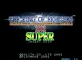
The King of Fighters 2002 Super que A + B esquive y que C + D dé el golpe que derriba. Hay que comprobar qué cambia esta versión pirata.
Botones A · Dar un puñetazo flojo B · Dar una patada floja C · Dar un puñetazo fuerte D · Dar una patada fuerte + A + B · Esquivar rodando + C + D · Golpe que derriba Empezar Meter una moneda + Salir del juego
Ver ficha y guía → ✅ Bien ⚠️ Problema ⏭️ Luego
128 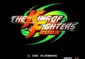
The King of Fighters 2003 Que A + B esquive y que C + D dé el golpe que derriba. Se puede cambiar de luchador en mitad del combate cuando sale «Change OK» (⚠️ no he encontrado con qué botones).
Botones A · Dar un puñetazo flojo B · Dar una patada floja C · Dar un puñetazo fuerte D · Dar una patada fuerte Empezar Meter una moneda + Salir del juego
Ver ficha y guía → ✅ Bien ⚠️ Problema ⏭️ Luego
129 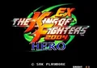
The King of Fighters 2004 Plus / Hero (The King of Fighters 2003 bootleg) Que A + B esquive y que C + D dé el golpe que derriba. Hay que comprobar qué cambia esta versión pirata.
Botones A · Dar un puñetazo flojo B · Dar una patada floja C · Dar un puñetazo fuerte D · Dar una patada fuerte Empezar Meter una moneda + Salir del juego
Ver ficha y guía → ✅ Bien ⚠️ Problema ⏭️ Luego
130 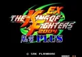
The King of Fighters 2004 Ultra Plus Que A + B esquive y que C + D dé el golpe que derriba. Hay que comprobar qué cambia esta versión pirata.
Botones A · Dar un puñetazo flojo B · Dar una patada floja C · Dar un puñetazo fuerte D · Dar una patada fuerte Empezar Meter una moneda + Salir del juego
Ver ficha y guía → ✅ Bien ⚠️ Problema ⏭️ Luego
131 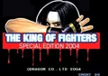
The King of Fighters Special Edition 2004 Que A + B esquive y que C + D dé el golpe que derriba. Hay que comprobar qué cambia esta versión pirata.
Botones A · Dar un puñetazo flojo B · Dar una patada floja C · Dar un puñetazo fuerte D · Dar una patada fuerte Empezar Meter una moneda + Salir del juego
Ver ficha y guía → ✅ Bien ⚠️ Problema ⏭️ Luego
132 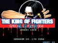
The King of Fighters Special Edition 2004 Plus que A + B esquive y que C + D dé el golpe que derriba. Hay que comprobar qué cambia esta versión pirata.
Botones A · Dar un puñetazo flojo B · Dar una patada floja C · Dar un puñetazo fuerte D · Dar una patada fuerte + A + B · Esquivar rodando + C + D · Golpe que derriba Empezar Meter una moneda + Salir del juego
Ver ficha y guía → ✅ Bien ⚠️ Problema ⏭️ Luego
133 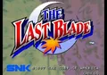
The Last Blade Según StrategyWiki (la 2, mismos botones): B (A) corte flojo, A (B) corte fuerte, Y (C) patada y X (D) desvía el ataque del rival. Al elegir luchador se escoge el estilo (Speed o Power).
Qué hace cada botón en el juego (cada saga los usa a su manera), para apuntarlo en la tabla. Botones A · Dar un corte flojo B · Dar un corte fuerte C · Dar una patada D · Desviar el ataque del rival Empezar Meter una moneda + Salir del juego
Ver ficha y guía → ✅ Bien ⚠️ Problema ⏭️ Luego
134 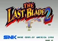
The Last Blade 2 Según StrategyWiki: B (A) corte flojo, A (B) corte fuerte, Y (C) patada y X (D) desvía el ataque del rival. Al elegir luchador se escoge el estilo (Speed, Power o EX).
Qué hace cada botón en el juego (cada saga los usa a su manera), para apuntarlo en la tabla. Botones A · Dar un corte flojo B · Dar un corte fuerte C · Dar una patada D · Desviar el ataque del rival Empezar Meter una moneda + Salir del juego
Ver ficha y guía → ✅ Bien ⚠️ Problema ⏭️ Luego
135 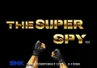
The Super Spy Según StrategyWiki: B (A) da un puñetazo o usa el arma, A (B) da una patada e Y (C) elige el arma; X (D) no se usa. ¿Se esquiva y se cubre con el joystick?
Qué botones usa el juego y qué hace cada uno, para apuntarlo en la tabla. Botones A · Dar un puñetazo · usar el arma B · Dar una patada C · Elegir el arma D · Sin uso (según StrategyWiki) Empezar Meter una moneda + Salir del juego
Ver ficha y guía → ✅ Bien ⚠️ Problema ⏭️ Luego
136 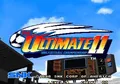
The Ultimate 11 - The SNK Football Championship Según StrategyWiki: B (A) chuta o pasa raso (sin balón: entrada), A (B) pasa alto (sin balón: juego duro) e Y (C) pasa corto o cambia de jugador; X (D) no se usa.
Qué botones usa el juego y qué hace cada uno, para apuntarlo en la tabla. Botones A · Chutar · pasar raso · sin balón: hacer una entrada B · Pasar alto · sin balón: juego duro C · Pasar corto · cambiar de jugador D · Sin uso (según StrategyWiki) Empezar Meter una moneda + Salir del juego
Ver ficha y guía → ✅ Bien ⚠️ Problema ⏭️ Luego
137 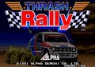
Thrash Rally Según StrategyWiki: B (A) acelera y A (B) frena; Y (C) y X (D) no se usan. ¿Gira bien con el joystick?
Qué botones usa el juego y qué hace cada uno, para apuntarlo en la tabla. Botones A · Acelerar B · Frenar C · Sin uso (según StrategyWiki) D · Sin uso (según StrategyWiki) Empezar Meter una moneda + Salir del juego
Ver ficha y guía → ✅ Bien ⚠️ Problema ⏭️ Luego
138 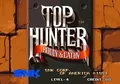
Top Hunter - Roddy & Cathy Según StrategyWiki: B (A) da un puñetazo (también estira el brazo, agarra y lanza), A (B) salta y R (C) cambia de plano (fondo o frente); X (D) no se usa. Los dos jugadores a la vez.
Qué hace cada botón en el juego, para corregir la tabla. Botones A · Dar un puñetazo · estirar el brazo · agarrar y lanzar B · Saltar C · Cambiar de plano (fondo o frente) D · Sin uso (según StrategyWiki) Empezar Meter una moneda + Salir del juego
Ver ficha y guía → ✅ Bien ⚠️ Problema ⏭️ Luego
139 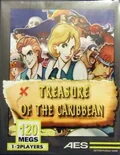
Treasure of the Caribbean que arranque (es un prototipo publicado en 2011) y qué botones mueven y colocan las fichas (⚠️ sin guía de los botones).
Qué botones usa el juego y qué hace cada uno, para apuntarlo en la tabla. Botones A B C D Empezar Meter una moneda + Salir del juego
Ver ficha y guía → ✅ Bien ⚠️ Problema ⏭️ Luego
140 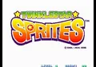
Twinkle Star Sprites Según StrategyWiki: B (A) dispara (mantener: disparo cargado) y A (B) lanza una bomba; R (C) y X (D) no se usan. Los dos jugadores a la vez, cada uno en su mitad de pantalla.
Qué hace cada botón en el juego, para corregir la tabla. Botones A · Disparar (mantener: disparo cargado) B · Lanzar una bomba C · Sin uso (según StrategyWiki) D · Sin uso (según StrategyWiki) Empezar Meter una moneda + Salir del juego
Ver ficha y guía → ✅ Bien ⚠️ Problema ⏭️ Luego
141 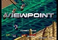
Viewpoint Que B (A) dispare y A (B) lance una bomba (⚠️ sin guía de los botones; hay tres tipos de bomba). ¿Hacen algo R y X?
Qué hace cada botón en el juego, para corregir la tabla. Botones A · Disparar B · Lanzar una bomba o hacer el ataque especial (⚠️ confirmar) C · si el juego lo usa (⚠️ confirmar) D · si el juego lo usa Empezar Meter una moneda + Salir del juego
Ver ficha y guía → ✅ Bien ⚠️ Problema ⏭️ Luego
142 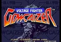
Voltage Fighter - Gowcaizer Según StrategyWiki: B (A) puñetazo rápido, A (B) patada rápida, Y (C) puñetazo fuerte y X (D) patada fuerte. Al ganar un combate se puede quedar con un movimiento especial del rival.
Qué hace cada botón en el juego (cada saga los usa a su manera), para apuntarlo en la tabla. Botones A · Dar un puñetazo rápido B · Dar una patada rápida C · Dar un puñetazo fuerte D · Dar una patada fuerte Empezar Meter una moneda + Salir del juego
Ver ficha y guía → ✅ Bien ⚠️ Problema ⏭️ Luego
143 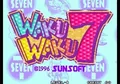
Waku Waku 7 Según StrategyWiki: B (A) puñetazo flojo, A (B) puñetazo fuerte, Y (C) patada floja y X (D) patada fuerte.
Qué hace cada botón en el juego (cada saga los usa a su manera), para apuntarlo en la tabla. Botones A · Dar un puñetazo flojo B · Dar un puñetazo fuerte C · Dar una patada floja D · Dar una patada fuerte Empezar Meter una moneda + Salir del juego
Ver ficha y guía → ✅ Bien ⚠️ Problema ⏭️ Luego
144 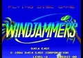
Windjammers Qué botón lanza el disco y cuál lo lanza en globo, y que sirvan para tirarse a por el disco (⚠️ sin guía de los botones). Los dos jugadores a la vez.
Qué botones usa el juego y qué hace cada uno, para apuntarlo en la tabla. Botones A B C D Empezar Meter una moneda + Salir del juego
Ver ficha y guía → ✅ Bien ⚠️ Problema ⏭️ Luego
145 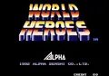
World Heroes Según StrategyWiki: B (A) da un puñetazo y A (B) una patada (mantener: más fuerte), e Y (C) agarra y lanza; X (D) no se usa.
Qué hace cada botón en el juego (cada saga los usa a su manera), para apuntarlo en la tabla. Botones A · Dar un puñetazo (mantener: más fuerte) B · Dar una patada (mantener: más fuerte) C · Agarrar y lanzar D · Sin uso (según StrategyWiki) Empezar Meter una moneda + Salir del juego
Ver ficha y guía → ✅ Bien ⚠️ Problema ⏭️ Luego
146 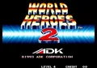
World Heroes 2 Según StrategyWiki: B (A) da un puñetazo y A (B) una patada (mantener: más fuerte), e Y (C) agarra o se burla del rival; X (D) no se usa.
Qué hace cada botón en el juego (cada saga los usa a su manera), para apuntarlo en la tabla. Botones A · Dar un puñetazo (mantener: más fuerte) B · Dar una patada (mantener: más fuerte) C · Agarrar · burlarse del rival D · Sin uso (según StrategyWiki) Empezar Meter una moneda + Salir del juego
Ver ficha y guía → ✅ Bien ⚠️ Problema ⏭️ Luego
147 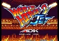
World Heroes 2 Jet Según la Wikipedia: B (A) da un puñetazo, A (B) una patada e Y (C) agarra o se burla del rival; X (D) no se usa. Novedad: carrera hacia delante y hacia atrás.
Qué hace cada botón en el juego (cada saga los usa a su manera), para apuntarlo en la tabla. Botones A · Dar un puñetazo B · Dar una patada C · Agarrar · burlarse del rival D · Sin uso (según StrategyWiki) Empezar Meter una moneda + Salir del juego
Ver ficha y guía → ✅ Bien ⚠️ Problema ⏭️ Luego
148 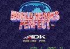
World Heroes Perfect Según StrategyWiki: B (A) puñetazo flojo, A (B) puñetazo fuerte, Y (C) patada floja y X (D) patada fuerte. A + B + C a la vez hace la habilidad especial de cada luchador.
Qué hace cada botón en el juego (cada saga los usa a su manera), para apuntarlo en la tabla. Botones A · Dar un puñetazo flojo B · Dar un puñetazo fuerte C · Dar una patada floja D · Dar una patada fuerte Empezar Meter una moneda + Salir del juego
Ver ficha y guía → ✅ Bien ⚠️ Problema ⏭️ Luego
149 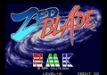
Zed Blade - Operation Ragnarok Según la Wikipedia: B (A) dispara todas las armas (frontal, misiles y trasera) y A (B) lanza una bomba. ¿Hacen algo R y X? Los dos jugadores a la vez.
Qué hace cada botón en el juego, para corregir la tabla. Botones A · Disparar (disparo frontal, misiles y trasero) B · Lanzar una bomba C · ⚠️ sin guía (seguramente sin uso) D · ⚠️ sin guía (seguramente sin uso) Empezar Meter una moneda + Salir del juego
Ver ficha y guía → ✅ Bien ⚠️ Problema ⏭️ Luego
150 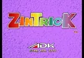
Zintrick / Oshidashi Zentrix (bootleg of CD version) Qué botones mueven y empujan los bloques (⚠️ sin guía de los botones). Es la versión del CD.
Qué botones usa el juego y qué hace cada uno, para apuntarlo en la tabla. Botones A B C D Empezar Meter una moneda + Salir del juego
Ver ficha y guía → ✅ Bien ⚠️ Problema ⏭️ Luego
Según StrategyWiki: B (A) da un puñetazo y lanza a los Zooks y A (B) salta; R (C) y X (D) no se usan. Los dos jugadores a la vez.
Qué hace cada botón en el juego, para corregir la tabla. Botones A · Dar un puñetazo · lanzar a los Zooks B · Saltar C · Sin uso (según StrategyWiki) D · Sin uso (según StrategyWiki) Empezar Meter una moneda + Salir del juego
Ver ficha y guía → ✅ Bien ⚠️ Problema ⏭️ Luego
No hay pruebas con este filtro.